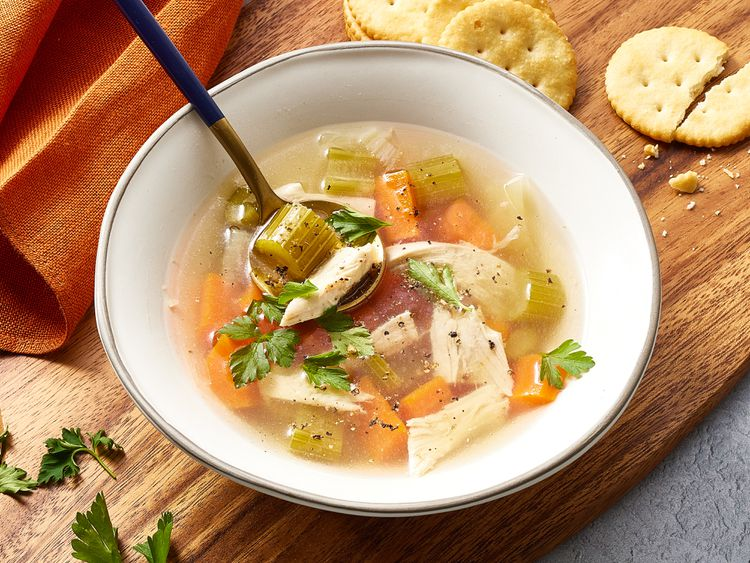

Chicken Soup

Description
This is a simple recipe for chicken soup. Some plain chicken and vegetables simmered together. Delicious
Ingredients
- 1 (3 pound) whole chicken
- 4 carrots, halved
- 4 stalks celery, halved
- 1 large onion, halved
- water to cover
- salt and pepper to taste
- 1 teaspoon of chicken bouillon granules (optional)
Steps
- Gather the ingredients
- Place the chicken, carrots, celery and onion in a large soup pot; Add enough cold water to cover. Bring to a boil over medium heat; Reduce heat to low and simmer, uncovered, until meat falls of the bone, about 90 minutes. Skim off foam every so often, as needed.
- Remove chicken from the pot and let sit until cool enough to handle; Chop meat into pieces, and discard skin and bones
- Strain out vegetables, reserving the stock, rinse the soup pot and return the stock to the pot. Chop vegetables into smaller pieces; Return chopped chicken and vegetables to the pot.
- Warm soup until heated through; Season with salt, pepper, and chicken bouillon to taste.
- Serve and enjoy
Home